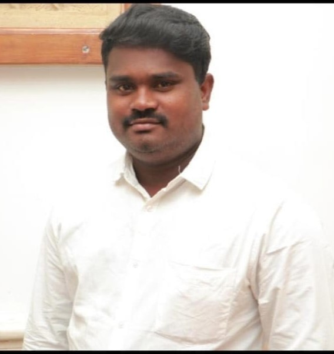

About Us
Golden Windows, established in 2022 by K. Bala Murugan, is a premier manufacturer of uPVC windows. We are located in Sikkandhar Chavadi, Madurai, Tamil Nadu. Our mission is to provide high-quality, durable, and aesthetically pleasing windows that meet our customers' needs.
Our Founder
K. Bala Murugan, the proprietor of Golden Windows, has extensive experience in the window manufacturing industry. His vision and dedication have been instrumental in the growth and success of the company.